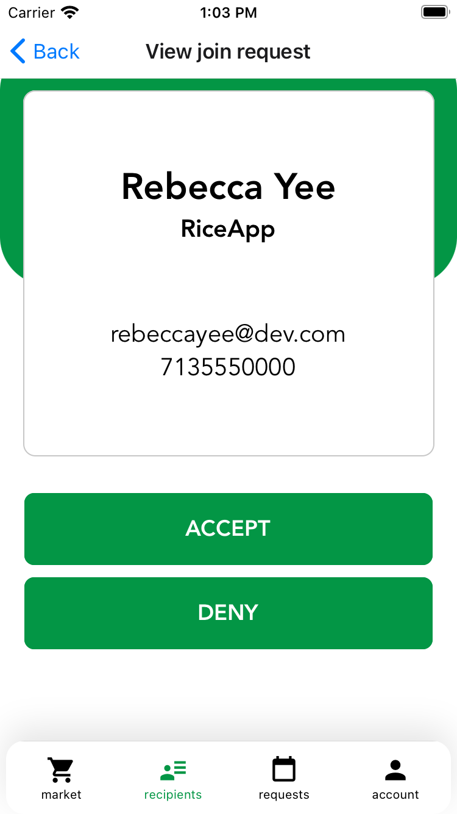
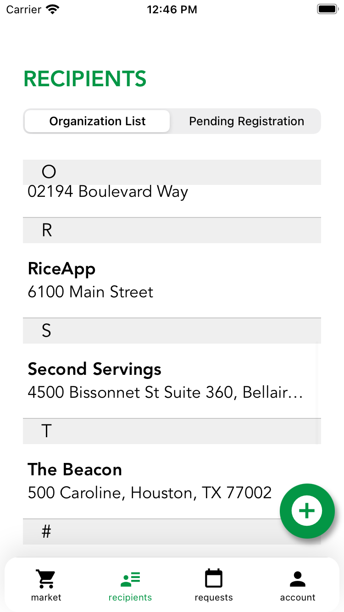
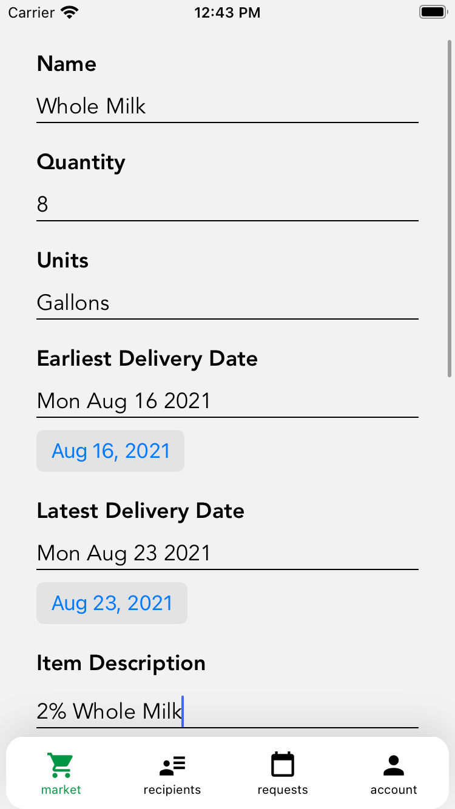
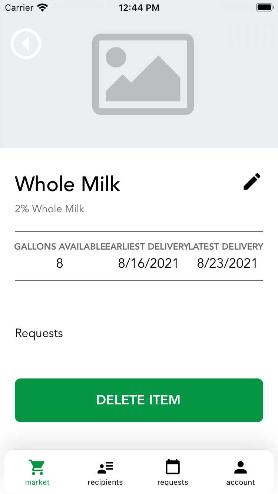

What is Second Servings?
Second Servings is Houston's only prepared and perishable food rescue organization. Food rescue is the practice of retrieving unserved food that would otherwise go to waste and distributing it to those in need. Second Servings has been redirecting unserved food since 2015.
The Second Servings app was created to help charities request excess food so that the food can be more efficiently directed to the people who need it most (soup kitchens, homeless shelters, etc.).
How did I contribute?
I worked on modifiyng the UX design, front-end, and back-end. Some of my contributions include changing the appearance of pages, adding alphabetical section headers to contact lists, and standardizing the front-end and back-end for new food entries.
   
What did I learn?
This was my first time collaborating in a team to accomplish specific tasks. I learned how to more clearly articulate my thoughts to my teammates--I realized the importance of being able to translate the abstract ideas in my head into concrete, logical steps when it comes to collaborative programming. I had also never worked with JavaScript libraries such as React and React Native before, so it was really interesting to work with the encapsulation of components that come together to eventually build an entire section of the app. Lastly, I gained a better understanding of version control through Git and GitHub. Previously, I had only used version control for my own projects. Since my updates to the app would be viewed by my team and by future developers, I gained a better understanding of the importance of effectively describing my own updates as well as referencing previous versions to help with my own development tasks.